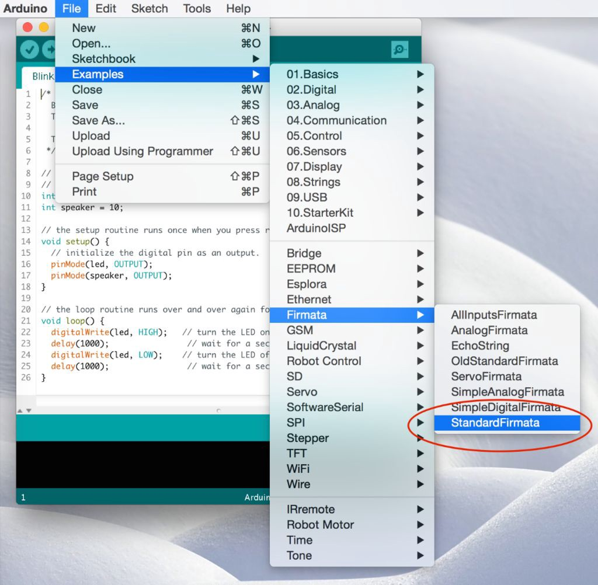
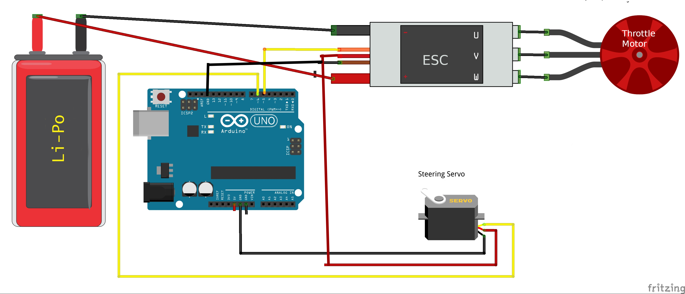

Actuators
A car needs a way to to move forward and backward and to turn left and right. We commonly call devices that produce a physical movement in the robot 'actuators'. Common actuators are DC motors, Servo motors, continuous servo motors and stepper motors. There are many, many different ways that these actuators can be combined to propel and turn a robot. Donkeycar supports two common configurations that can be implemented with various actuators:
- Car-like vehicles steer by angling the front wheels left or right and move by turning the drive wheels forward or reverse. Common RC cars fall in this category.
- Differential drive vehicles have two independently controlled drive wheels to provide both movement and steering. For instance a differential drive car can be driven straight forward by turning the two drive wheels forward at the same speed. In order to turn, one motor can be driven faster than the other and the car will turn an arc in the direction of the slower motor.
Actuators take control signals from the Donkeycar to control their actions. There are several options for generating these control signals. - PCA9685 Servo controller board - RPi/Jetson 40 pin GPIO header - see Generating PWM from the Jetson Nano for how to enable PWM output from the Jetson Nano 40 pin GPIO header. - Arduino
Below we will describe the supported actuator setups and software configuration of their control signals.
Standard RC with ESC and Steering Servo.
A standard RC car is equipped with a steering servo for steering the front wheels and an ESC (Electronic Speed Controller) to control the speed of the DC motor driving the wheels. Both the steering servo and the ESC take a PWM (Pulse Width Modulation) control signal. A PWM signal is simply a square wave pulse of a certain duration and frequency. In the case of the steering servo the PWM signal determines the position of the servo's arm, which is generally between 0 degrees (full right) and 180 degrees (full left). In the case of the ESC the PWM signal determines the direction and speed of the drive motor, from full reverse, through stopped, to full forward.
- Standard RC servo pulses range from 1 millisecond (full reverse for ESC, fully left for servo) to 2 milliseconds (full forward for ESC, full right for servo) with 1.5 milliseconds being neutral (stopped for ESC, straight for servo).
- These pulses are typically sent at 50 hertz (one duty cycle every 20 milliseconds). One duty cycle includes a period where the signal is brought high followed by a period where the signal is brought low. This means that, using the standard 50hz frequency, a 1 millisecond pulse (1 ms high followed by 19 ms low) represents a 5% duty cycle and a 2 millisecond pulse represents a 10% duty cycle.
- The most important part is the length of the pulse; it must be in the range of 1 to 2 milliseconds.
")
- So this means that if a different frequency is used, then the duty cycle must be adjusted in order to get the 1ms to 2ms pulse.
- For instance, if a 60hz frequency is used, then a 1 ms pulse requires a duty cycle of 0.05 * 60 / 50 = 0.06 (6%) duty cycle
- We default the frequency of our PCA9685 to 60 hz, so pulses in config are generally based on 60hz frequency and 12 bit values. We use 12 bit values because the PCA9685 has 12 bit resolution. So a 1 ms pulse is 0.06 * 4096 ~= 246, a neutral pulse of 0.09 duty cycle is 0.09 * 4096 ~= 367 and full forward pulse of 0.12 duty cycles is 0.12 * 4096 ~= 492
- These are generalizations that are useful for understanding the underlying api call arguments and the values that are generating when calibrating. The final choice of duty-cycle/pulse length depends on your hardware and perhaps your strategy (you may not want to go too fast, and so you may choose is low max throttle pwm)
Generating PWM pulses with a PCA9685 Servo controller
- The hardware connection of the PCA9685 I2C servo driver board is described fully in the overall setup instructions here
- The PCA9685 Servo controller is connected the RaspberryPi or Jetson Nano via the I2C pins on the 40 Pin bus, then the 3 pin cables from the ESC and Steering Servo are connected to the PCA9685, generally to channel 0 and channel 1 respectively. See Step 4: Connect Servo Shield. Connection of a PCA9685 to a Jetson Nano is the same.
Configuration
- Use
DRIVE_TRAIN_TYPE = "PWM_STEERING_THROTTLE"in myconfig.py - Set the pin specifiers for PCA9685 in the
# PWM_STEERING_THROTTLEsection of myconfig.py. For example:
PWM_STEERING_PIN = "PCA9685.1:40.0" # PCA9685, I2C bus 1, address 0x40, channel 0
PWM_THROTTLE_PIN = "PCA9685.1:40.1" # PCA9685, I2C bus 1, address 0x40, channel 1
See pins for a detailed discussion of pin providers and pin specifiers.
Generating PWM pulses from the 40 pin GPIO header
- Here the PWM signal is generated from the 40 pin GPIO header. The data pin on the 3-pin ESC and Servo connectors are connected to a PWM pin on the GPIO. The ground pins on the 3-pin connectors are connected to a common ground. The 5V pins on the 3-pin connectors are connected to the 5V pins on the GPIO: the 3-pin connector from the ESC will generally provide 5V that can then be used to power the Servo.
Configuration
- Use
DRIVE_TRAIN_TYPE = "PWM_STEERING_THROTTLE"in myconfig.py - Set the pin specifiers for GPIO in the
# PWM_STEERING_THROTTLEsection. Note that each pin has both a BOARD mode and a BCM (Broadcom) mode identifier. You can use either mode, but all pins must use the same mode. For example:
PWM_STEERING_PIN = "RPI_GPIO.BOARD.33" # GPIO board mode pin-33 == BCM mode pin-13
PWM_THROTTLE_PIN = "RPI_GPIO.BOARD.12" # GPIO board mode pin-12 == BCM mode pin-18
See pins for a detailed discussion of pin providers and pin specifiers.
Direct control with the RaspberryPi GPIO pins.
Please follow the instructions here
Control with the Robo HAT MM1 board.
Please follow the instructions here
Arduino
Arduino can be used in the following fashion to generate PWM signals to control the steering and throttle.
For now the Arduino mode is only tested on the Latte Panda Delta (LP-D) board. However it should be straightforward to use it with Raspberry Pi / Jetson Nano (instead of PCA 9685).
Refer to the below block diagram to understand where things fits in.

Arduino board should be running the standard firmata sketch (This sketch comes by default when you download the arduino tool). Load the standard firmata sketch (from Examples > Firmata > StandardFirmata) onto the Arduino.  Further pymata_aio_ python package needs to be installed on the car computer via pip3 install pymata_aio.
As shown in the block-diagram above LattePanda combines both the x86 CPU and the Connected Arduino into a single board.
The following diagram shows how to connect the Arduino pins to steering servo and ESC.
 Note that the power for the servo is provided by the ESC battery elemininator circuit (BEC) which most ESC's provide. This is done to avoid supplying the entire servo power from Arduino's 5v. In large RC cars the servo can drag up to 2 amps, which lead to a destruction of the Arduino.
Calibration
Note that the calibration procedure/values are slightly different for the Arduino (than PCA9685). Note that 90 is the usual midpoint (i.e. 1.5 ms pulse width at 50 Hz), so it is recommended to start with 90 and adjust +/- 5 until you figure the desired range for steering / throttle.
(env1) jithu@jithu-lp:~/master/pred_mt/lp/001/donkey$ donkey calibrate --arduino --channel 6
using donkey v2.6.0t ...
pymata_aio Version 2.33 Copyright (c) 2015-2018 Alan Yorinks All rights reserved.
Using COM Port:/dev/ttyACM0
Initializing Arduino - Please wait...
Arduino Firmware ID: 2.5 StandardFirmata.ino
Auto-discovery complete. Found 30 Digital Pins and 12 Analog Pins
Enter a PWM setting to test(0-180)95
Enter a PWM setting to test(0-180)90
Enter a PWM setting to test(0-180)85
...
Note the --arduino switch passed to the calibrate command. Further note that the arduino pin being calibrated is passed via the --channel parameter.
Using the arduino actuator part
The following snippet illustrates how to exercise the Arduino actuator in the drive() loop:
#Drive train setup
arduino_controller = ArduinoFirmata(
servo_pin=cfg.STEERING_ARDUINO_PIN,
esc_pin=cfg.THROTTLE_ARDUINO_PIN)
steering = ArdPWMSteering(controller=arduino_controller,
left_pulse=cfg.STEERING_ARDUINO_LEFT_PWM,
right_pulse=cfg.STEERING_ARDUINO_RIGHT_PWM)
throttle = ArdPWMThrottle(controller=arduino_controller,
max_pulse=cfg.THROTTLE_ARDUINO_FORWARD_PWM,
zero_pulse=cfg.THROTTLE_ARDUINO_STOPPED_PWM,
min_pulse=cfg.THROTTLE_ARDUINO_REVERSE_PWM)
V.add(steering, inputs=['user/angle'])
V.add(throttle, inputs=['user/throttle'])
Refer to templates/arduino_drive.py for more details.
HBridge Motor Controller and Steering Servo
In this configuration the DC motor that drives the wheels is controlled by an L298N HBridge motor controller or compatible. Steering the front wheels is accomplished with a Steering Servo that takes an PWM pulse. The motor driver is wired in one of two ways; 3 pin wiring or 2 pin wiring.
3-pin HBridge and Steering Servo
A single DC gear motor is controlled with an L298N using two TTL output pins to select direction and a PWM pin to control the power to the motor.
See https://www.electronicshub.org/raspberry-pi-l298n-interface-tutorial-control-dc-motor-l298n-raspberry-pi/ for a discussion of how the L298N HBridge module is wired in 3-pin mode to the RaspberryPi GPIO. This also applies to the some other driver chips that emulate the L298N, such as the TB6612FNG motor driver.
Configuration
- use
DRIVETRAIN_TYPE = "SERVO_HBRIDGE_3PIN"in myconfig.py - Example pin specifiers using 40 pin GPIO header to generate signals:
HBRIDGE_3PIN_FWD = "RPI_GPIO.BOARD.18" # ttl pin, high enables motor forward
HBRIDGE_3PIN_BWD = "RPI_GPIO.BOARD.16" # ttl pin, highenables motor reverse
HBRIDGE_3PIN_DUTY = "RPI_GPIO.BOARD.35" # provides duty cycle to motor
PWM_STEERING_PIN = "RPI_GPIO.BOARD.33" # provides servo pulse to steering servo
STEERING_LEFT_PWM = 460 # pwm value for full left steering (use `donkey calibrate` to measure value for your car)
STEERING_RIGHT_PWM = 290 # pwm value for full right steering (use `donkey calibrate` to measure value for your car)
A PCA9685 could also be used to generate all control signals. See pins for a detailed discussion of pin providers and pin specifiers.
2-pin HBridge and Steering Servo
A single DC gear motor is controlled with an 'mini' L298N HBridge (or an L9110S HBridge) using 2 PWM pins; one pwm pin to enable and control forward speed and one to enable and control reverse motor speed.
See https://www.instructables.com/Tutorial-for-Dual-Channel-DC-Motor-Driver-Board-PW/ for how an L298N mini-hbridge module is wired in 2-pin mode.
See https://electropeak.com/learn/interfacing-l9110s-dual-channel-h-bridge-motor-driver-module-with-arduino/ for how an L9110S/HG7881 motor driver module is wired.
Configuration
- use
DRIVETRAIN_TYPE = "SERVO_HBRIDGE_2PIN"in myconfig.py - Example pin specifiers using 40 pin GPIO header to generate signals:
HBRIDGE_2PIN_DUTY_FWD = "RPI_GPIO.BOARD.18" # provides forward duty cycle to motor
HBRIDGE_2PIN_DUTY_BWD = "RPI_GPIO.BOARD.16" # provides reverse duty cycle to motor
PWM_STEERING_PIN = "RPI_GPIO.BOARD.33" # provides servo pulse to steering servo
STEERING_LEFT_PWM = 460 # pwm value for full left steering (use `donkey calibrate` to measure value for your car)
STEERING_RIGHT_PWM = 290 # pwm value for full right steering (use `donkey calibrate` to measure value for your car)
A PCA9685 could also be used to generate all control signals. See pins for a detailed discussion of pin providers and pin specifiers.
HBridge for both Steering and Throttle
Some very inexpensive toy cars use a DC motor to drive the back wheels forward and reverse and another DC motor to steer the front wheels left or right. A single L298N HBridge (or L9110S HBridge) can be used to control these two motors. This driver assumes 2-pin wiring where each motor uses two PWM pins, one for each direction.
Configuration
- use
DRIVETRAIN_TYPE = "DC_STEER_THROTTLE"in myconfig.py - Example pin specifiers using 40 pin GPIO header to generate signals:
HBRIDGE_PIN_LEFT = "RPI_GPIO.BOARD.18" # pwm pin produces duty cycle for steering left
HBRIDGE_PIN_RIGHT = "RPI_GPIO.BOARD.16" # pwm pin produces duty cycle for steering right
HBRIDGE_PIN_FWD = "RPI_GPIO.BOARD.15" # pwm pin produces duty cycle for forward drive
HBRIDGE_PIN_BWD = "RPI_GPIO.BOARD.13" # pwm pin produces duty cycle for reverse drive
A PCA9685 could also be used to generate all control signals. See pins for a detailed discussion of pin providers and pin specifiers.
Differential Drive cars
An inexpensive Donkeycar compatible robot can be constructed using a cheap smart car robot chassis that includes 2 DC gear motors and an L298N motor driver or compatible to run the motors. Steering is accomplished by running one motor faster than the other, causing the car to drive in an arc. The motor driver can be wired in one of two ways; 3 pin wiring or 2 pin wiring.
3-pin HBridge Differential Drive
2 DC gear motors are controlled with an L298N, each motor using two TTL output pins to select direction and a PWM pin to control the power to the motor. Since each motor uses 3 pins, so a total of 6 pins are used in a differential drive configuration. The advantage of this wiring scheme is that it only requires 2 PWM pins, which happens to be the maximum number of PWM pins on the Jetson Nano.
See https://www.electronicshub.org/raspberry-pi-l298n-interface-tutorial-control-dc-motor-l298n-raspberry-pi/ for a discussion of how the L298N HBridge module is wired in 3-pin mode to the RaspberryPi GPIO. This also applies to the some other driver chips that emulate the L298N, such as the TB6612FNG motor driver.
Configuration
- use
DRIVETRAIN_TYPE = "DC_TWO_WHEEL_L298N"in myconfig.py - Example pin specifiers using 40 pin GPIO header to generate signals:
HBRIDGE_L298N_PIN_LEFT_FWD = "RPI_GPIO.BCM.16" # BCM.16 == BOARD.36
HBRIDGE_L298N_PIN_LEFT_BWD = "RPI_GPIO.BCM.20" # BCM.20 == BOARD.38
HBRIDGE_L298N_PIN_LEFT_EN = "RPI_GPIO.BCM.12" # BCM.12 == BOARD.32
HBRIDGE_L298N_PIN_RIGHT_FWD = "RPI_GPIO.BCM.5" # BCM.5 == BOARD.29
HBRIDGE_L298N_PIN_RIGHT_BWD = "RPI_GPIO.BCM.6" # BCM.6 == BOARD.31
HBRIDGE_L298N_PIN_RIGHT_EN = "RPI_GPIO.BCM.13" # BCM.13 == BOARD.33
- Example pin specifiers using a PCA9685 to generate signals:
HBRIDGE_L298N_PIN_LEFT_FWD = "PCA9685.1:40.0"
HBRIDGE_L298N_PIN_LEFT_BWD = "PCA9685.1:40.1"
HBRIDGE_L298N_PIN_LEFT_EN = "PCA9685.1:40.2"
HBRIDGE_L298N_PIN_RIGHT_FWD = "PCA9685.1:40.10"
HBRIDGE_L298N_PIN_RIGHT_BWD = "PCA9685.1:40.11"
HBRIDGE_L298N_PIN_RIGHT_EN = "PCA9685.1:40.13"
- In the configuration, the HBRIDGE_L298N_PIN_xxxx_EN pins determine how fast the motors spin. These pins must support PWM output. Remember that the Jetson Nano only supports 2 PWM output pins and only if they are enabled using
/opt/nvidia/jetson-io/jetson-io.py. See Generating PWM from the Jetson Nano. - The HBRIDGE_L298N_PIN_xxxx_FWD and HBRIDGE_L298N_PIN_xxxx_BWD pins are TTL output pins that determine the direction the motors spin.
See pins for a detailed discussion of pin providers and pin specifiers.
2 Pin HBridge Differential Drive
2 DC Motors controlled with an 'mini' L298N HBridge, each motor using 2 PWM pins; one pwm pin to enable and control forward speed and one to enable and control reverse motor speed. This advantage of this wiring method is that it only requires a total of 4 pins.
See https://www.instructables.com/Tutorial-for-Dual-Channel-DC-Motor-Driver-Board-PW/ for how an L298N mini-HBridge modules is wired in 2-pin mode. This driver can also be used with an L9110S/HG7881 motor driver. See https://electropeak.com/learn/interfacing-l9110s-dual-channel-h-bridge-motor-driver-module-with-arduino/ for how an L9110S motor driver module is wired.
Configuration
- use
DRIVETRAIN_TYPE = "DC_TWO_WHEEL"in myconfig.py - example pin specifiers using the 40 pin GPIO to generate signals:
HBRIDGE_PIN_LEFT_FWD = "RPI_GPIO.BCM.16" # BCM.16 == BOARD.36
HBRIDGE_PIN_LEFT_BWD = "RPI_GPIO.BCM.20" # BCM.20 == BOARD.38
HBRIDGE_PIN_RIGHT_FWD = "RPI_GPIO.BCM.5" # BCM.5 == BOARD.29
HBRIDGE_PIN_RIGHT_BWD = "RPI_GPIO.BCM.6" # BCM.6 == BOARD.31
- example pin specifiers using a PCA9685 to generate signals:
HBRIDGE_PIN_LEFT_FWD = "PCA9685.1:40.0"
HBRIDGE_PIN_LEFT_BWD = "PCA9685.1:40.1"
HBRIDGE_PIN_RIGHT_FWD = "PCA9685.1:40.5"
HBRIDGE_PIN_RIGHT_BWD = "PCA9685.1:40.6"
See pins for a detailed discussion of pin providers and pin specifiers.